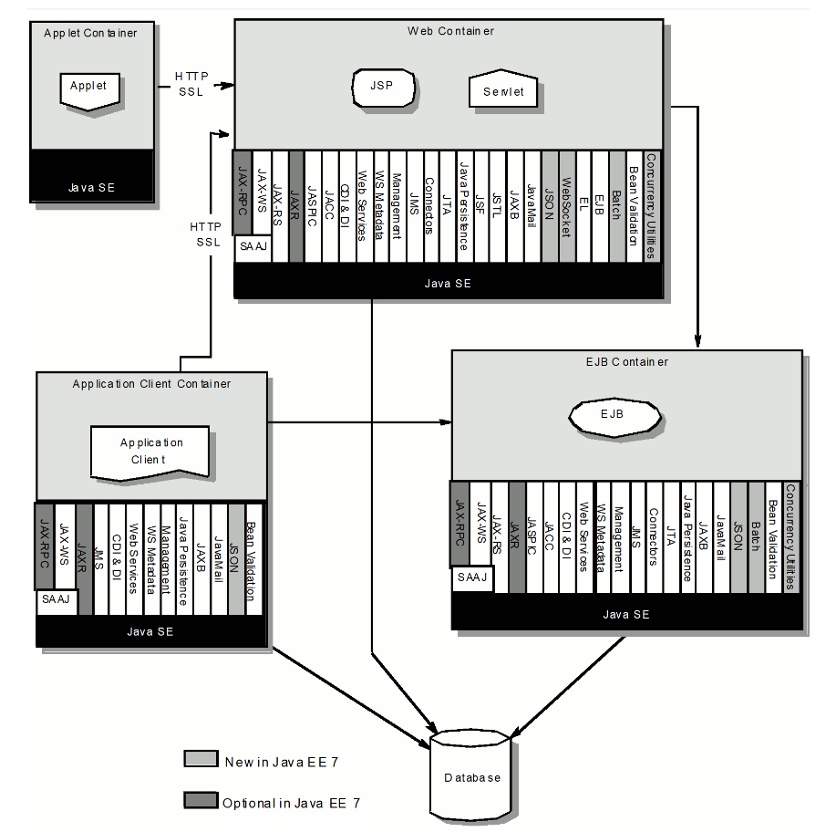

JavaEE
Intro
Multi-tier web applications

What is Java EE?
Java Platform, Enterprise Edition - is a set of specifications, extending Java SE with specifications for enterprise features.
Known as:
- J2EE (1999)
- Java EE (2006)
- Jakarta EE (2019)
Application servers
Application servers:
- Glassfish
- JBoss AS / JBoss Wildfly
- Apache TomEE
Application containers:
- Apache Tomcat
- Eclipse Jetty
Specifications

Simple Java EE application
Application server installation
Application setup
Deployment descriptor
src/main/webapp/WEB-INF/web.xml
<?xml version="1.0" encoding="UTF-8"?>
<web-app>
<display-name>Archetype Created Web Application</display-name>
</web-app>Deployment process
Chosen specifications
Servlet
Java servlet - is a Java software component that extends the capabilities of a server.
Servlet - declaration
import javax.servlet.http.HttpServlet;
public class MyServlet extends HttpServlet {
}Servlet - dependency
<dependency>
<groupId>javax.servlet</groupId>
<artifactId>javax.servlet-api</artifactId>
<version>4.0.0</version>
<scope>provided</scope>
</dependency>Servlet - configuration
Annotated by
@WebServletweb.xml
Servlet - tasks
Servlet - request parameters
request.getParameter(String)Servlet - request parameters - task
CDI
CDI (Contexts and Dependency Injection) - is a standard dependency injection framework included in Java EE 6 and higher.
CDI - Dependency Injection motivation
Wiring everything together is a tedious part of application development. There are several approaches to connect data, service, and presentation classes to one another.
CDI - Maven
<dependency>
<groupId>jakarta.inject</groupId>
<artifactId>jakarta.inject-api</artifactId>
<version>1.0</version>
</dependency>CDI - beans.xml
<?xml version="1.0" encoding="UTF-8"?>
<beans xmlns="http://xmlns.jcp.org/xml/ns/javaee" xmlns:xsi="http://www.w3.org/2001/XMLSchema-instance"
xsi:schemaLocation="http://xmlns.jcp.org/xml/ns/javaee http://xmlns.jcp.org/xml/ns/javaee/beans_1_1.xsd"
bean-discovery-mode="all">
</beans>CDI - using beans
@Inject